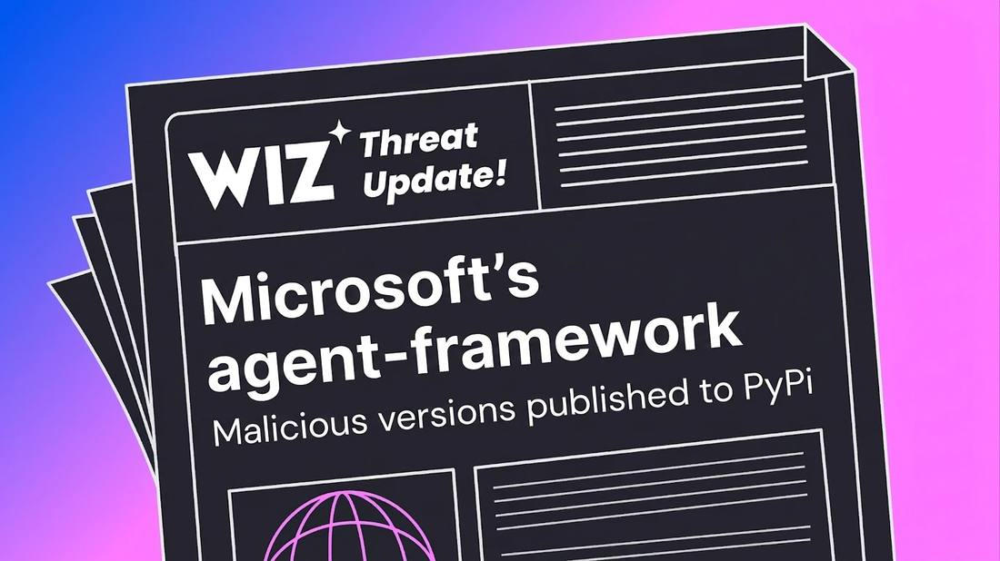
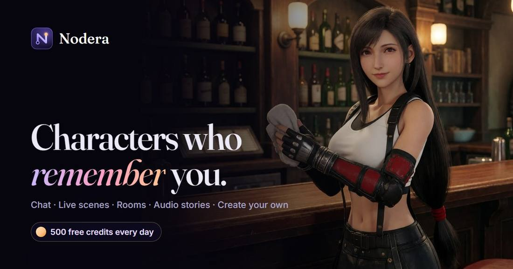
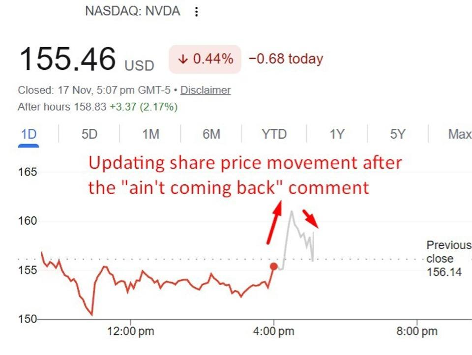
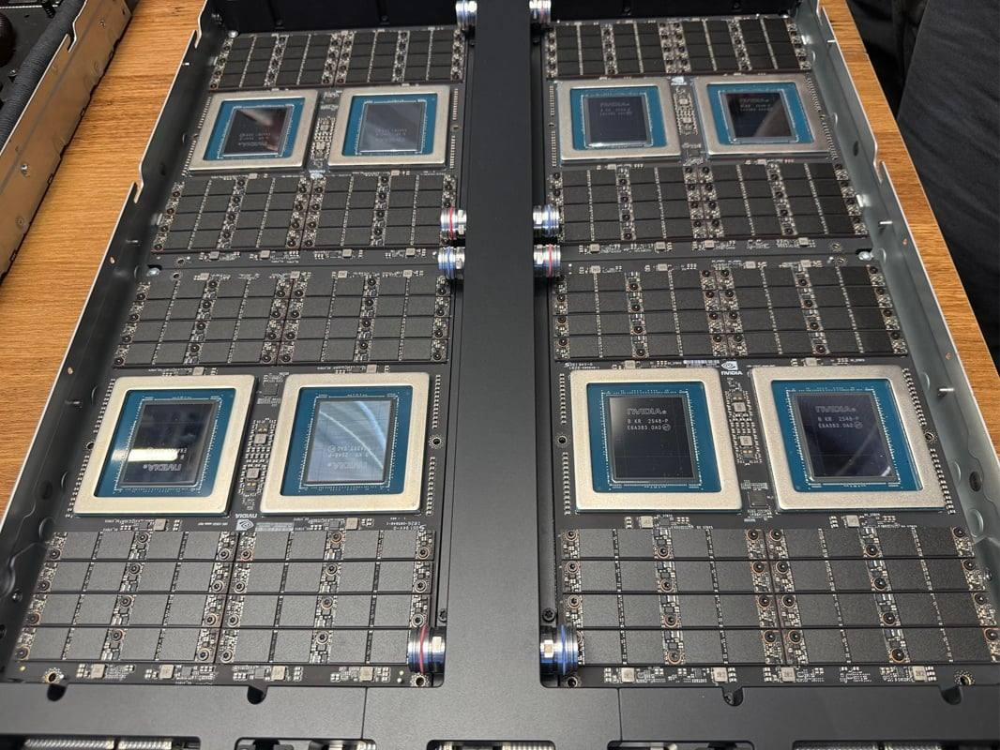
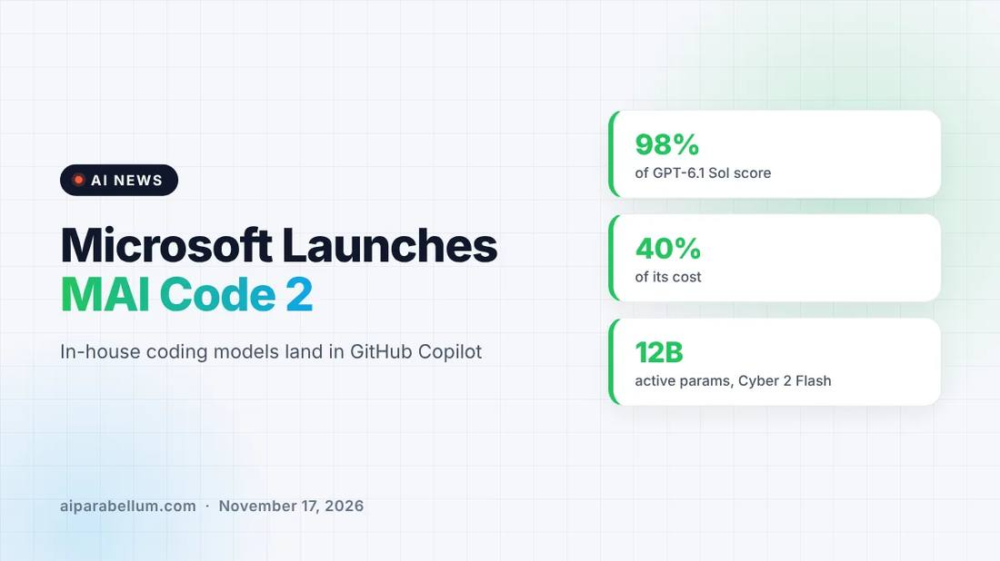

Facts first
Reporting and analysis are kept apart on every page. Sources and uncertainty are stated, not buried.

Two malicious releases of Microsoft Agent Framework's PyPI package, versions 1.26.1 and 1.26.2, appeared on November 17, 2026, 33 minutes apart, and were removed within about an hour. A .pth startup hook ran a credential stealer on every Python start, harvesting Azure, Azure DevOps and GitHub Actions secrets and sending them to a webhook.site URL. At most 50 requests reached the attacker's free-tier token, per Wiz. The safe version is 1.26.0.

Judge Orders Privacy Ombudsman Before Character.ai's User Chats Can Be SoldA federal bankruptcy judge in Delaware ordered the appointment of an independent consumer privacy ombudsman on November 17, 2026, before Character.ai's user data can change hands in its Chapter 11 sale. The ombudsman will report to the court on what a sale would mean for the people whose information is involved, including whether chats count as personal data. The order lands one day before objections close to the $10 million opening bid for the app, the brand, the models and user data. OpenAI Releases GPT-6.2 Astra and Sol: Cheaper, Faster, and Its First Model Rated High for Self-ImprovementOpenAI released GPT-6.2 Astra and Sol on November 17, 2026, in ChatGPT Work and Codex and through the API. Astra, the new frontier model, costs 20% less than GPT-6 Astra in the API while setting new highs on OpenAI's professional-work and science benchmarks, and Sol nearly matches it on real-codebase tests at about one-fifth the cost. Both models meet OpenAI's Critical threshold for cybersecurity, ship with tighter safeguards for higher-risk security assistance, and Astra is the first model OpenAI has released publicly that meets its High threshold for AI self-improvement.
OpenAI Releases GPT-6.2 Astra and Sol: Cheaper, Faster, and Its First Model Rated High for Self-ImprovementOpenAI released GPT-6.2 Astra and Sol on November 17, 2026, in ChatGPT Work and Codex and through the API. Astra, the new frontier model, costs 20% less than GPT-6 Astra in the API while setting new highs on OpenAI's professional-work and science benchmarks, and Sol nearly matches it on real-codebase tests at about one-fifth the cost. Both models meet OpenAI's Critical threshold for cybersecurity, ship with tighter safeguards for higher-risk security assistance, and Astra is the first model OpenAI has released publicly that meets its High threshold for AI self-improvement. Kress Raises Nvidia's Fiscal 2028 Growth Outlook to 75% as CPU Revenue Set to More Than DoubleInterim chief executive Colette Kress raised Nvidia's fiscal 2028 revenue growth outlook to approximately 75 percent year over year, up from 70 percent, on the November 17, 2026 earnings call, and said total CPU revenue will more than double in fiscal 2028 as agentic AI drives extraordinary demand for CPUs. The raise came hours after Nvidia reported $115.8 billion in third-quarter revenue and a $130 billion fourth-quarter guide, and while the Wall Street Journal reported a Securities and Exchange Commission investigation into the company.
Kress Raises Nvidia's Fiscal 2028 Growth Outlook to 75% as CPU Revenue Set to More Than DoubleInterim chief executive Colette Kress raised Nvidia's fiscal 2028 revenue growth outlook to approximately 75 percent year over year, up from 70 percent, on the November 17, 2026 earnings call, and said total CPU revenue will more than double in fiscal 2028 as agentic AI drives extraordinary demand for CPUs. The raise came hours after Nvidia reported $115.8 billion in third-quarter revenue and a $130 billion fourth-quarter guide, and while the Wall Street Journal reported a Securities and Exchange Commission investigation into the company.| WORLD & POLICY | 22 |
| MARKETS & INDUSTRY | 130 |
| AI FRONTIER | 246 |
| ROBOTICS & AI | 32 |
| WEB3 INFRASTRUCTURE | 5 |
| RESEARCH & SCIENCE | 9 |
OpenAI Releases GPT-6.2 Astra and Sol: Cheaper, Faster, and Its First Model Rated High for Self-ImprovementOpenAI released GPT-6.2 Astra and Sol on November 17, 2026, in ChatGPT Work and Codex and through the API. Astra, the new frontier model, costs 20% less than GPT-6 Astra in the API while setting new highs on OpenAI's professional-work and science benchmarks, and Sol nearly matches it on real-codebase tests at about one-fifth the cost. Both models meet OpenAI's Critical threshold for cybersecurity, ship with tighter safeguards for higher-risk security assistance, and Astra is the first model OpenAI has released publicly that meets its High threshold for AI self-improvement.Kress Raises Nvidia's Fiscal 2028 Growth Outlook to 75% as CPU Revenue Set to More Than DoubleInterim chief executive Colette Kress raised Nvidia's fiscal 2028 revenue growth outlook to approximately 75 percent year over year, up from 70 percent, on the November 17, 2026 earnings call, and said total CPU revenue will more than double in fiscal 2028 as agentic AI drives extraordinary demand for CPUs. The raise came hours after Nvidia reported $115.8 billion in third-quarter revenue and a $130 billion fourth-quarter guide, and while the Wall Street Journal reported a Securities and Exchange Commission investigation into the company.
Nvidia Board Rules Out Huang's Return, Hires Heidrick & Struggles to Find Its Next CEONvidia's board used its first earnings call without Jensen Huang to rule out his return as chief executive, hours after Huang said he would be honored to come back if asked. Chairman Harvey Jones told analysts the board unanimously accepted Huang's November 12 resignation and "does not intend to reinstate Jensen as CEO", and said the board has retained Heidrick & Struggles to lead the search for a permanent chief executive. The company took no questions on the resignation or the ongoing investigation. Interim chief executive Colette Kress said AI enterprise demand is expected to double in fiscal 2028, and that agentic AI is driving extraordinary demand for CPUs. Genesis AI Raises $500M at a $3.5B Valuation to Put General-Purpose Robots to WorkGenesis AI, a Paris and San Carlos robotics company building general-purpose robots, raised $500 million in Series A funding at a $3.5 billion post-money valuation on November 17, 2026, co-led by Premji Invest, Khosla Ventures and Eclipse, with NVIDIA, AMD Ventures and former Google chief executive Eric Schmidt among the participants. The company builds its full stack in-house, GENE, a dexterous hand and data glove, Genesis World simulation and its flagship robot Eno, and will use the money to deploy Eno at scale in manufacturing, logistics and laboratories.
Genesis AI Raises $500M at a $3.5B Valuation to Put General-Purpose Robots to WorkGenesis AI, a Paris and San Carlos robotics company building general-purpose robots, raised $500 million in Series A funding at a $3.5 billion post-money valuation on November 17, 2026, co-led by Premji Invest, Khosla Ventures and Eclipse, with NVIDIA, AMD Ventures and former Google chief executive Eric Schmidt among the participants. The company builds its full stack in-house, GENE, a dexterous hand and data glove, Genesis World simulation and its flagship robot Eno, and will use the money to deploy Eno at scale in manufacturing, logistics and laboratories.
Nvidia Beats Big in Its First Jensen-Free Quarter: $115.8B Revenue, $130B GuideNvidia reported third-quarter fiscal 2027 revenue of $115.84 billion, up 103 percent year over year, beating the $108.71 billion consensus by about $7.1 billion, with non-GAAP earnings of $2.68 per share against $2.47 expected and Data Center revenue of $107.6 billion, up 110 percent. The company guided fourth-quarter revenue to $130.0 billion, plus or minus 3 percent, above consensus, and said Vera Rubin NVL72 has shipped. It is the first print since Jensen Huang resigned on November 12, with interim chief executive Colette Kress leading the call. Anthropic's Final Filing Before Pricing: Amazon and Google to Own 28.4%Anthropic filed Amendment No. 3 to its S-1 on November 17, 2026, the final filing before pricing expected November 18. Amazon will own 14.7% and Google 13.7% of Anthropic's outstanding capital stock after the IPO and a concurrent $26 billion private placement, a combined 28.4%. The placement is led by Google and Nvidia at $10 billion each. The $70 to $78 range for 825 million shares is unchanged, Nasdaq has approved the ANT listing, and net proceeds are estimated at $84.6 billion at the $74 midpoint.
Anthropic's Final Filing Before Pricing: Amazon and Google to Own 28.4%Anthropic filed Amendment No. 3 to its S-1 on November 17, 2026, the final filing before pricing expected November 18. Amazon will own 14.7% and Google 13.7% of Anthropic's outstanding capital stock after the IPO and a concurrent $26 billion private placement, a combined 28.4%. The placement is led by Google and Nvidia at $10 billion each. The $70 to $78 range for 825 million shares is unchanged, Nasdaq has approved the ANT listing, and net proceeds are estimated at $84.6 billion at the $74 midpoint. Jensen Huang Breaks His Silence: 'Honored' to Return as Nvidia CEO if the Board AsksJensen Huang said on November 17, 2026 that he would be honored to return as Nvidia CEO if the board decides his return is in the best interest of shareholders, employees, the company and America, in his first public statement since resigning on November 12. He owned his mistakes and pledged cooperation with the board's independent investigation. The board told the Washington Post on Monday it has no plans to reinstate him, while an open letter from more than 10,000 current and former employees calls for his return. Nvidia reports third-quarter earnings after the close on Tuesday, its first under interim CEO Colette Kress.Model ML Raises $250M at a $1.5B Valuation to Put AI Agents Inside BanksModel ML, a London startup building personal AI agents for bankers, consultants and investors, raised $250 million in Series B funding at a $1.5 billion valuation on November 17, 2026, co-led by General Atlantic and QED Investors. Total funding now stands at $350 million. In the third quarter of 2026, annual recurring revenue grew 12 times year on year and daily active users rose 26 times, and the company claims its own fine-tuned open-source models do the same financial work at 2 percent of frontier cost.
Jensen Huang Breaks His Silence: 'Honored' to Return as Nvidia CEO if the Board AsksJensen Huang said on November 17, 2026 that he would be honored to return as Nvidia CEO if the board decides his return is in the best interest of shareholders, employees, the company and America, in his first public statement since resigning on November 12. He owned his mistakes and pledged cooperation with the board's independent investigation. The board told the Washington Post on Monday it has no plans to reinstate him, while an open letter from more than 10,000 current and former employees calls for his return. Nvidia reports third-quarter earnings after the close on Tuesday, its first under interim CEO Colette Kress.Model ML Raises $250M at a $1.5B Valuation to Put AI Agents Inside BanksModel ML, a London startup building personal AI agents for bankers, consultants and investors, raised $250 million in Series B funding at a $1.5 billion valuation on November 17, 2026, co-led by General Atlantic and QED Investors. Total funding now stands at $350 million. In the third quarter of 2026, annual recurring revenue grew 12 times year on year and daily active users rose 26 times, and the company claims its own fine-tuned open-source models do the same financial work at 2 percent of frontier cost.
Microsoft Unveils MAI Code 2, Its In-House Coding Models, in GitHub CopilotMicrosoft unveiled MAI Code 2 and MAI Code 2 Flash at Ignite 2026 on November 17, its first in-house coding model family built to challenge OpenAI and Anthropic on price. Microsoft claims Code 2 delivers 98% of GPT-6.1 Sol's coding performance at 40% of the cost and 96% of Claude Opus 5.5 at 5% of the cost, on its own benchmarks, with a cyber model, a decision model and new image and transcription models rounding out the lineup. Both coding models are live in GitHub Copilot now.Policy, geopolitics and macro forces — the events that move the map.
OPEN DESK → · 22 REPORTS02Capital, deals and industry structure, with every number sourced.
OPEN DESK → · 130 REPORTS03Models, agents and compute — verified against primary sources before publication.
OPEN DESK → · 246 REPORTS04Humanoids, embodied AI and automation — real deployments, not demos.
OPEN DESK → · 32 REPORTS05Blockchain infrastructure and industry facts. No investment advice.
OPEN DESK → · 5 REPORTS06Papers, labs and frontier science, with the limits of each claim stated.
OPEN DESK → · 9 REPORTSOne sponsor slot per cycle across the briefing and the homepage. Pricing steps up with real traffic. Audience numbers are never inflated.
Reporting and analysis are kept apart on every page. Sources and uncertainty are stated, not buried.
Key facts link back to the publishing institution and the original document, with page screenshots on file.
Each report carries a screenshot of its primary source. One click takes you to the original.
Events, timelines and entities are linked, so a headline becomes a position in a larger picture.
We monitor official announcements, filings, wire reporting and front-line social signals, then merge duplicate coverage of the same event.
Social posts are leads, never sources. Each event is confirmed against its primary source and a second independent report before publication.
Background, timelines and related entities are attached to every event, and follow-ups are published as updates to the same record.